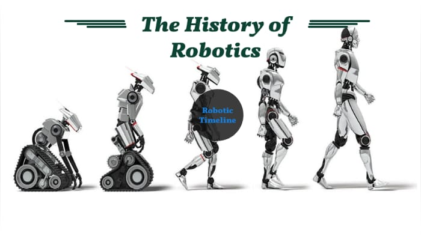
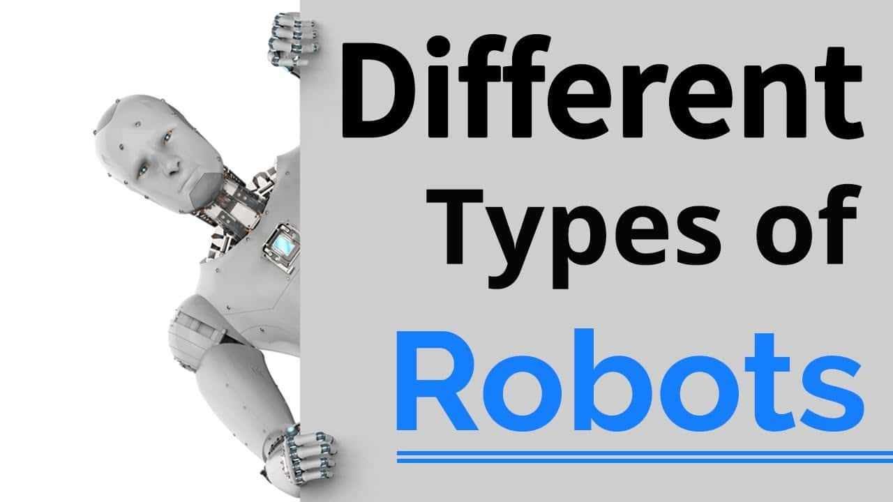

Mohannad Sroor
Cyber Security
About My Major
Cybersecurity is the practice of protecting computer systems, networks, and digital information from unauthorized access, theft, damage, or other malicious attacks. With the increasing reliance on digital technology in our personal and professional lives, cybersecurity has become an essential aspect of protecting sensitive information and assets.
Cybersecurity encompasses a wide range of practices and technologies, such as firewalls, antivirus software, encryption, intrusion detection and prevention systems, access control, and security policies and procedures. It also involves staying informed about the latest threats and vulnerabilities, and taking proactive measures to mitigate risks and respond to security incidents.
Cybersecurity is crucial for individuals, businesses, and governments alike, as cyberattacks can result in significant financial losses, reputational damage, and even physical harm. As technology continues to evolve and new threats emerge, cybersecurity will remain an important focus area for organizations and individuals around the world..
Artificial intelligence (AI) and software engineering
are two distinct
fields that are often related
but have some important differences. Software engineering
is the process of designing, implementing....

The history of robots dates
back to ancient history.
One of the earliest
recorded examples of a robot was the ancient Greek
myth of Pygmalion, who created a statue
that was brought to life....
The first recorded use of the word
"robot" was in a 1920 play called
"R.U.R." (Rossum's
Universal Robots)
by Czech playwright Karel Čapek. In the play
robots are artificially created
beings that are meant to serve
humans. The word
"robot"...

Industrial robots:
Welding robots
Assembly robots
Packaging robots
Painting robots
Material handling robots
Palletizing robots
...